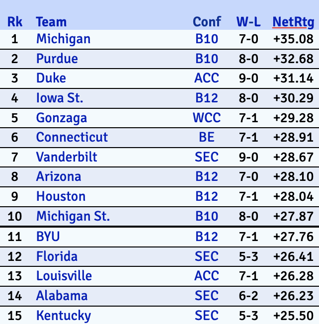
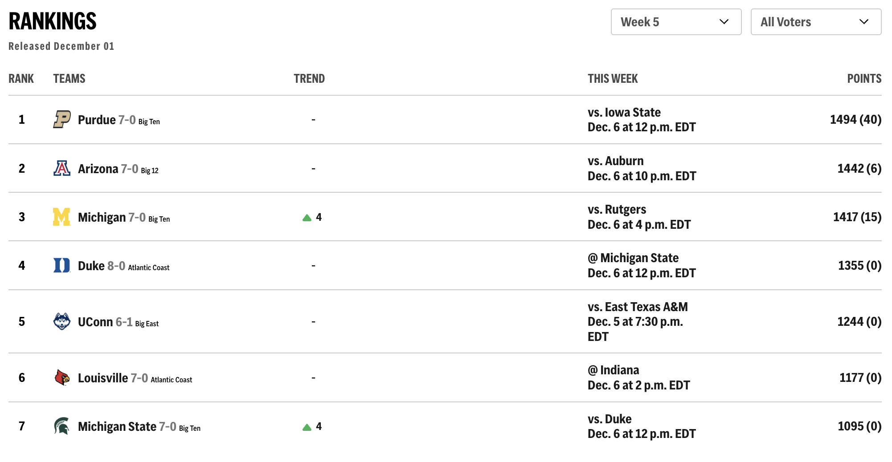

KenPom v. AP Poll: Anayltics v. Voting
By William Deffaa
November 11, 2025
As one of the toughest parts of the college basketball season begins, with top teams facing off agianst each other in invitational tournements and marquee matchups take center stage.
In college basketball, two ranking systems reign supreme.
KenPom Rankings
KenPom, which dives into the analytics of college basketball and ranks teams overall based on adjusted efficeincy margin, determined when subtracting offensive efficiency by defensive efficiency. The resulting number shows the number of points a team would outscore an 'average' team by.
For example, in the image above, we see that Michigan is leading the KenPom rankings due to a +35.08 Net Rating, meaning they should be outscoring an 'average' team by around 38 points.
AP Poll Top 25
The other major ranking system, and the one that is more widely associated with college basketball rankings is the Associated Press (AP) Poll. This poll is based on votes by a committee at the Associated Press that ranks the top 25 college basketball teams in the nation. Each vote toward a team counts toward a certian amount of points, for example, a 1st place vote is equal to 25 points and so on down from 1-25.
Here we see that Purdue is ranked No. 1, with 1494 points, which is all of the points per-rank where all 62 votes ranked Purdue.
The number in parentheses next to the total number is the number of first place votes gien to that school. In Purdue's case, they received 40 first place votes.
Correlation Between KenPom and AP Poll?
Even with the AP Poll and KenPom having vastly different methods to ranking college basketball teams, with AP Poll being more of an 'eye-test' ranking and KenPom being strictly data-driven, this begs the question: Is there a correlation between where KenPom ranks teams and where the AP Poll ranks them?
From the graphic, we can see that for most of the teams that are ranked in the top 15 in KenPom rankings, they are closely correlated with their respective AP Poll ranks in the Top 25, with only a few slight outliers like Gonzaga, Arizona and Vanderbilt existing.
Which is More Accurate?
With anything that involves ranking something, accuracy may be brought into the question. In the case of KenPom v. AP Poll, both sites offer pre-season rankings before the gueling season begins and at the end ranks the teams once again.
When looking at the 2024-2025 college basketball season, both systems's pre-season rankings did not age well. However, KenPom is less far off on its pre-season ranking and the final ranking result compared to AP Poll.
Conclusion
Overall, the way you look at college basketball, whether from an anayltical perspective of the 'eye test' is completely subjective and is entirely up to fandom. Yet, when it comes to the in-depth, KenPom is the way to go.